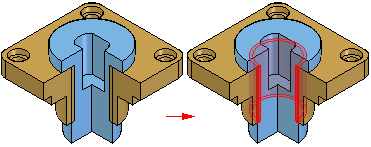

Check Interference command
Checks to see whether two selections share the same space. You can select one part and check it against another part, or you can select one or more parts and check them against themselves, against a second set of selected parts, or against all of the parts in the assembly.

You can select the parts in the graphics window or in the PathFinder tab. When selecting parts in the graphic window, you can select individual parts, or you can define a fence to select a set of parts.
You can use the Interference Options dialog box to specify output options, such as whether interfering volumes are displayed graphically or saved as parts, and how threaded features are treated during interference analysis. You can also save the interference analysis data to a separate document.
How do I
Move a part in an assemblyMove multiple parts in an assembly
Check for interference between parts in an assembly
Learn more
Analyzing movement and detecting collisions in assembliesMoving and mirroring rules for assembly bodies
Checking interference on parts
Look up more details
Move Components commandMove Components command bar
Move Options dialog box
Drag Component command
Steering Wheel
Drag Component command bar
Analysis Options dialog box
Check Interference command bar
Report page (Interference Options dialog box)
Interference Options dialog box
Options page (Interference Options dialog box)